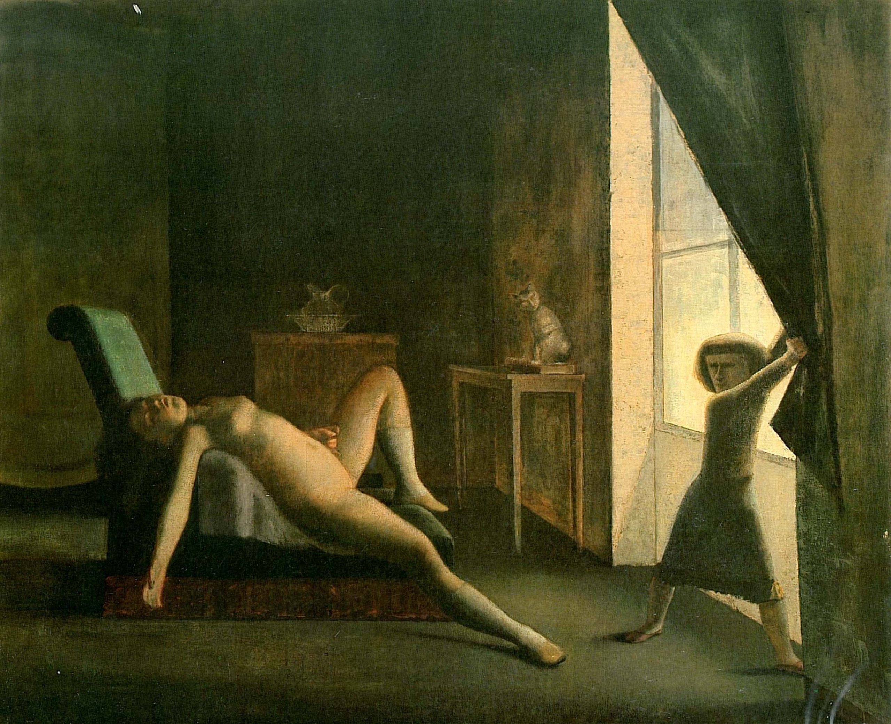

Lágrimas de Eros · Obra 100 de 121
La habitación (La Chambre)
Balthus (1952-1954)

Una muchacha desnuda tendida en un diván mientras una figura pequeña descorre la cortina y deja entrar la luz. Es un lienzo grande, pintado entre 1952 y 1954. En 1961 estaba en la Galerie Henriette Gomes de París; hoy es de una colección particular.
Lo que hace que destaque
Una muchacha desnuda tendida en un diván mientras una figura pequeña descorre la cortina y deja entrar la luz. Es un lienzo grande, pintado entre 1952 y 1954. En 1961 estaba en la Galerie Henriette Gomes de París; hoy es de una colección particular.
Contexto histórico
No hay ficha institucional a la que enlazar: el enlace lleva a la ficha de la agencia Bridgeman Images, de donde salen los datos (270,5 × 335 cm, colección particular).
Autoría y procedencia
Balthus (Balthasar Klossowski de Rola, 1908-2001), pintor moderno de origen polaco-francés, célebre por sus interiores enigmáticos, sus durmientes y sus atmósferas suspendidas.
En los libros
Las lágrimas de Eros, de Georges Bataille · Lámina de la p. 181
«Los cuadros de Balthus son pocos y, aunque haya que contarlo entre los pintores más «modernos», nada los distingue claramente de los de los pintores tradicionales.»Balthus's paintings are few in number and, although he is to be counted among the most "modern" of painters, nothing clearly distinguishes them from those of traditional painters.Georges Bataille, «Las lágrimas de Eros» (1961), traducido al español de la ed. inglesa de City Lights (1989), p. 181
Ficha pendiente de contrastar con fuentes académicas.